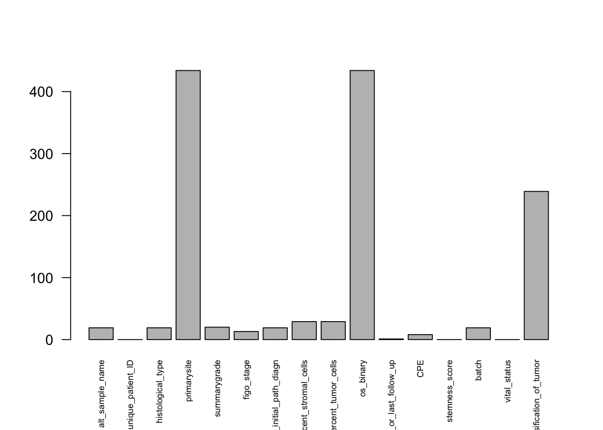
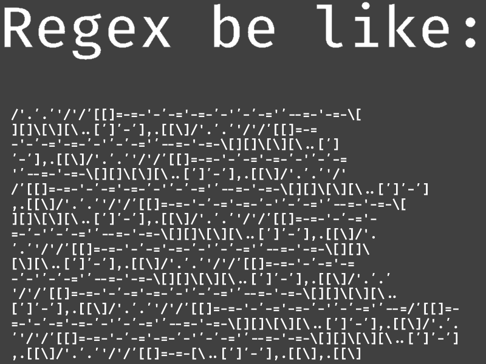

library(tidyverse)
# unload MASS since it has select function we don't want to use. Presentation 1: Data Cleaning
In this section, we will clean and prepare a dataset for analysis. We will mainly use functions from the tidyverse, although in some cases base R provides quick and effective alternatives.
Load Packages
Load data
We’ll work with two datasets:
df_ov: clinical information for ovarian cancer patients.df_exp: gene expression data for collagen genes.
We load these data using load(), which imports one or more R objects stored in an .RData file. Let’s have a look at it.
# .RData can contain several objects
load("../data/Other/GDC_Ovarian.RData")
class(df_ov)[1] "tbl_df" "tbl" "data.frame"dim(df_ov)[1] 434 16df_ov %>% head() # A tibble: 6 × 16
alt_sample_name unique_patient_ID histological_type primarysite summarygrade
<chr> <chr> <chr> <lgl> <chr>
1 TCGA-20-0987-01A… TCGA-20-0987-01A ser NA HIGH
2 TCGA-24-0979-01A… TCGA-24-0979-01A ser NA HIGH
3 TCGA-23-1021-01B… TCGA-23-1021-01B ser NA HIGH
4 TCGA-04-1337-01A… TCGA-04-1337-01A ser NA LOW
5 TCGA-23-1032-01A… TCGA-23-1032-01A ser NA HIGH
6 TCGA-23-1118-01A… TCGA-23-1118-01A ser NA HIGH
# ℹ 11 more variables: figo_stage <chr>, age_at_initial_path_diagn <int>,
# percent_stromal_cells <dbl>, percent_tumor_cells <dbl>, os_binary <lgl>,
# days_to_death_or_last_follow_up <int>, CPE <dbl>, stemness_score <dbl>,
# batch <int>, vital_status <chr>, classification_of_tumor <chr>class(df_exp)[1] "data.frame"dim(df_exp)[1] 434 45df_exp %>% head() unique_patient_ID COL9A2 COL23A1 COL11A1 COL17A1 COL5A3 COL4A4 COL19A1
1 TCGA-13-1489-02A 4711 1833 342 13 475 47 11
2 TCGA-29-1691-01A 2446 164 1401 23 641 75 31
3 TCGA-23-1023-01A 1732 365 229 25 608 385 1
4 TCGA-23-1023-01R 8136 15648 9414 3057 7497 59 5
5 TCGA-29-2414-02A 1882 512 740 10 533 139 1
6 TCGA-29-2414-01A 1528 778 12401 6 1880 66 2
COL16A1 COL9A3 COL20A1 COL1A1 COL12A1 COL9A1 COL7A1 COL10A1 COL21A1 COL5A1
1 675 35 17 30675 1850 381 1635 373 13 1630
2 1195 1110 0 91791 4152 2413 1326 679 384 6771
3 6377 267 18 548304 5477 71 193 565 134 19063
4 2614 2524 18 1366398 27440 198 5266 5596 17 72285
5 509 349 13 49686 10566 826 1655 397 9 3375
6 1885 411 6 596853 28469 375 691 7018 20 36959
COL4A2 COL2A1 COL6A1 COL6A2 COL8A1 COL26A1 COL6A3 COL1A2 COL3A1 COL4A3
1 7298 0 9119 9637 349 688 3929 17897 14857 35
2 24582 2196 9166 10042 1679 31 7622 36847 30676 26
3 31386 96 43404 63891 2717 255 24990 189240 74207 33
4 80848 102 126341 140975 4312 15763 66211 443393 316695 9
5 6068 757 8173 7159 330 158 7202 21642 17183 38
6 11399 274 42200 39900 6991 272 28921 223930 152278 11
COL22A1 COL24A1 COL8A2 COL6A5 COL18A1 COL4A1 COL14A1 COL4A5 COL25A1 COL27A1
1 837 8 504 2 4120 7376 35 69 891 997
2 29 235 1194 2 11153 17143 1681 1782 168 1674
3 20 6 686 9 33578 18811 5985 1044 74 783
4 2953 150 3627 73 67487 73812 4670 4490 10 4509
5 790 1411 825 31 16691 5416 274 2007 175 6969
6 274 198 3448 18 18895 10875 1313 1826 289 2122
COL13A1 COL4A6 COL11A2 COL5A2 COL15A1 COL6A6 COL28A1
1 128 3 77 1275 385 11 38
2 1150 328 666 3669 1983 25 54
3 308 141 47 3430 1744 44 37
4 1603 327 394 25452 6795 312 91
5 634 351 516 1632 470 111 315
6 611 359 92 12321 847 272 97Some Basics
First, let’s look at the variable vital_status in the clinical metadata. It indicates whether the patient is alive or deceased, and in later analyses can be used as an outcome variable.
df_ov %>%
select(vital_status)# A tibble: 434 × 1
vital_status
<chr>
1 "deceased"
2 "deceased"
3 "deceased"
4 "deceased"
5 "deceased"
6 "living"
7 "living"
8 "living"
9 "deceased"
10 "deceased "
# ℹ 424 more rowstable(df_ov$figo_stage)
Stage II Stage IIA Stage IIB Stage IIC Stage III Stage IIIA Stage IIIB
8 2 4 11 110 5 8
Stage IIIC Stage IV
207 66 Let’s take a look at the structure of the clinical dataset.
str(df_ov)tibble [434 × 16] (S3: tbl_df/tbl/data.frame)
$ alt_sample_name : chr [1:434] "TCGA-20-0987-01A-02R-0434-01" "TCGA-24-0979-01A-01R-0434-01" "TCGA-23-1021-01B-01R-0434-01" "TCGA-04-1337-01A-01R-0434-01" ...
$ unique_patient_ID : chr [1:434] "TCGA-20-0987-01A" "TCGA-24-0979-01A" "TCGA-23-1021-01B" "TCGA-04-1337-01A" ...
$ histological_type : chr [1:434] "ser" "ser" "ser" "ser" ...
$ primarysite : logi [1:434] NA NA NA NA NA NA ...
$ summarygrade : chr [1:434] "HIGH" "HIGH" "HIGH" "LOW" ...
$ figo_stage : chr [1:434] "Stage III" "Stage IV" "Stage IV" "Stage IIIC" ...
$ age_at_initial_path_diagn : int [1:434] 61 53 45 78 73 45 45 78 50 77 ...
$ percent_stromal_cells : num [1:434] 1 25 0 36 5 NA NA 4 0 30 ...
$ percent_tumor_cells : num [1:434] 72 72 100 64 72 NA NA 94 0 70 ...
$ os_binary : logi [1:434] NA NA NA NA NA NA ...
$ days_to_death_or_last_follow_up: int [1:434] 701 1264 1446 61 84 2616 816 797 1646 679 ...
$ CPE : num [1:434] 0.649 0.833 0.873 0.772 0.79 ...
$ stemness_score : num [1:434] 0.716 0.685 0.757 0.164 0.818 ...
$ batch : int [1:434] 12 12 12 12 12 12 12 12 12 12 ...
$ vital_status : chr [1:434] "deceased" "deceased" "deceased" "deceased" ...
$ classification_of_tumor : chr [1:434] NA "primary" NA "primary" ...Data wrangling and cleaning
Let’s do some cleanup
Check Missing values and NAs
Drop Variables with Too Many Missing Values
Drop Non-Informative Variables
Standardize Categorical Data
Fix Variable Types
Recode and Reorder Factors
Create New Variables from existing ones
Step 1: Check for missing values and convert "NA" strings to real NAs
Sometimes missing values are stored as text, such as "NA " or "na", rather than as true NA values. Before exploring missingness, it is a good idea to clean these up so that R can recognize them correctly.
df_ov$summarygrade %>%
unique()[1] "HIGH" "LOW" NA "NA " We can convert this text value to a proper missing value using na_if():
df_ov <- df_ov %>%
mutate(summarygrade = na_if(summarygrade, "NA "))After this cleanup, the column contains only the valid categories and true missing values:
df_ov$summarygrade %>%
unique()[1] "HIGH" "LOW" NA This looks better, but it is useful to apply the same check across all character variables in the dataset.
df_ov <- df_ov %>%
mutate(across(where(is.character), ~ na_if(., "NA ")))Now that we have NAs sorted out, let´s count how many there are.
We use is.na() to identify missing values in the data frame. This creates a logical matrix where TRUE indicates a missing value. Next, colSums() counts how many missing values each column contains. Finally, we use a base R barplot() to visualize the number of missing values across variables.
df_ov %>%
is.na() %>%
colSums() %>%
barplot(las=2, cex.names=0.6) # baseR barplot since we are plotting a vector
Here, las = 2 rotates the variable names to make them easier to read, and cex.names = 0.6 makes the labels smaller so they fit better.
This gives a quick overview of missingness in the dataset and helps identify variables that may need further cleaning or filtering.
Step 2: Drop Variables with Too Many Missing Values
On this note. If a variable has more than ~50% missing data, it probably won’t be useful. Let’s remove those:
We calculate the proportion of missing values in each column using colMeans(is.na(df_ov)). This works because is.na(df_ov) returns TRUE for missing values and FALSE otherwise, and colMeans() treats TRUE as 1 and FALSE as 0, giving the fraction of missing values in each column.
threshold <- 0.50 # 50% threshold
keep_cols <- colMeans(is.na(df_ov)) < threshold
names_removed <- names(df_ov)[!keep_cols]
# inspect removed variables
df_ov %>%
select(all_of(names_removed)) %>%
slice_head(n = 6)# A tibble: 6 × 3
primarysite os_binary classification_of_tumor
<lgl> <lgl> <chr>
1 NA NA <NA>
2 NA NA primary
3 NA NA <NA>
4 NA NA primary
5 NA NA <NA>
6 NA NA primary df_ov <- df_ov %>%
select(-names_removed)Warning: Using an external vector in selections was deprecated in tidyselect 1.1.0.
ℹ Please use `all_of()` or `any_of()` instead.
# Was:
data %>% select(names_removed)
# Now:
data %>% select(all_of(names_removed))
See <https://tidyselect.r-lib.org/reference/faq-external-vector.html>.This keeps only the variables that are mostly complete.
Step 3: Drop Non-Informative Variables
Let’s check a few categorical variables and remove any that are redundant or irrelevant. If they don’t provide useful or well-curated information, we can drop them:
df_ov$histological_type %>% table().
ser
415 Example of irrelevant variable: histological_type has 100% of the same value, so it’s not useful for analysis. We can drop it with select() and a minus sign.
df_ov <- df_ov %>%
select(-histological_type)Step 4: Standardize Categorical Variables
Sometimes, typos, hidden characters or spaces cause mis-grouped levels. So let’s have a closer look at the unique values of vital_status.
df_ov$vital_status %>%
unique()[1] "deceased" "living" "deceased " "living " It looks like the variable contains two main groups: alive and deceased. But there is an issue whitespaces.
Whitespace includes spaces, newlines, and other blank characters in text. It can cause errors or inconsistencies in data, so removing unnecessary whitespace is an important step in cleaning data.
We can use the str_trim() function to remove whitespace.
str_trim(" Hello World! ")[1] "Hello World!"Like many other functions, str_trim() can be used inside mutate() to modify a data frame column.
df_ov <- df_ov %>%
mutate(vital_status = str_trim(vital_status))Accessing the unique values of the vital_status column.
df_ov$vital_status %>%
unique()[1] "deceased" "living" Step 5: Fix Variable Types
Some variables are stored as character or numeric vectors even though they represent categories and should be stored as factors. In those cases, it makes more sense to convert them to factors.
# One by one...
table(df_ov$batch)
9 11 12 13 14 15 17 18 19 21 22 24 40
22 28 36 39 41 21 46 42 29 33 38 39 1 class(df_ov$batch)[1] "integer"#df_ov$batch <- as.factor(df_ov$batch)# In one go:
cols_to_factor <- c('vital_status',
'figo_stage',
'summarygrade',
'batch')
df_ov <- df_ov %>%
mutate(across(any_of(cols_to_factor), as.factor))cols_to_numeric <- c('age_at_initial_path_diagn',
'days_to_death_or_last_follow_up',
'CPE',
'stemness_score')
df_ov <- df_ov %>%
mutate(across(any_of(cols_to_numeric), as.numeric))Step 6: Recode and Reorder Factors
Sometimes we want to set the order of factor levels manually, especially if there’s a natural or meaningful order (e.g., “low” → “high”): This makes plots and model outputs (regression coefficients) easier to interpret.
# Recode factor
df_ov$summarygrade %>% table().
HIGH LOW
362 52 # Reorder levels
df_ov$summarygrade <- factor(df_ov$summarygrade, levels = c('LOW', 'HIGH'))
levels(df_ov$summarygrade) # low, high[1] "LOW" "HIGH"Some stage categories can be merged to create larger and easier-to-interpret groups.
table(df_ov$figo_stage)
Stage II Stage IIA Stage IIB Stage IIC Stage III Stage IIIA Stage IIIB
8 2 4 11 110 5 8
Stage IIIC Stage IV
207 66 df_ov <- df_ov %>%
mutate(figo_stage = fct_recode(figo_stage,
"Stage II" = "Stage II",
"Stage II" = "Stage IIA",
"Stage II" = "Stage IIB",
"Stage II" = "Stage IIC",
"Stage III" = "Stage III",
"Stage III" = "Stage IIIA",
"Stage III" = "Stage IIIB",
"Stage III" = "Stage IIIC"))
table(df_ov$figo_stage)
Stage II Stage III Stage IV
25 330 66 Step 7: Creating New Variables
Next, we will create a few new variables by combining or transforming existing columns.
Add a column susing mathematical operation.
df_ov %>%
mutate(percent_normal_cells = 100 - percent_tumor_cells - percent_stromal_cells) %>%
select(percent_tumor_cells,
percent_stromal_cells,
percent_normal_cells)# A tibble: 434 × 3
percent_tumor_cells percent_stromal_cells percent_normal_cells
<dbl> <dbl> <dbl>
1 72 1 27
2 72 25 3
3 100 0 0
4 64 36 0
5 72 5 23
6 NA NA NA
7 NA NA NA
8 94 4 2
9 0 0 100
10 70 30 0
# ℹ 424 more rowsAdd a column combining other columns into one:
For character vectors, base R provides the functions paste and paste0 for combining strings. Here we use paste to join values with a separator.
paste('TCGA', 'Data', sep = ' ')[1] "TCGA Data"df_ov <- df_ov %>%
mutate(Stage_Grade = paste(figo_stage, summarygrade, sep = '-'))
df_ov %>% select(Stage_Grade)# A tibble: 434 × 1
Stage_Grade
<chr>
1 Stage III-HIGH
2 Stage IV-HIGH
3 Stage IV-HIGH
4 Stage III-LOW
5 Stage IV-HIGH
6 Stage III-HIGH
7 Stage III-HIGH
8 Stage II-HIGH
9 Stage III-HIGH
10 Stage III-HIGH
# ℹ 424 more rowsAdd a column based on conditions:
We can also create new variables conditionally using if_else.
df_ov %>%
mutate(dominant_cell_type = if_else(
percent_tumor_cells < 50, "not_cancer_cells", "cancer_cells")) %>%
select(percent_tumor_cells,
dominant_cell_type)# A tibble: 434 × 2
percent_tumor_cells dominant_cell_type
<dbl> <chr>
1 72 cancer_cells
2 72 cancer_cells
3 100 cancer_cells
4 64 cancer_cells
5 72 cancer_cells
6 NA <NA>
7 NA <NA>
8 94 cancer_cells
9 0 not_cancer_cells
10 70 cancer_cells
# ℹ 424 more rowsFor multiple conditions, case_when is often more readable than nested if_else statements.
table(df_ov$Stage_Grade)
NA-HIGH NA-NA Stage II-HIGH Stage II-LOW Stage II-NA
2 11 14 8 3
Stage III-HIGH Stage III-LOW Stage III-NA Stage IV-HIGH Stage IV-LOW
292 34 4 54 10
Stage IV-NA
2 df_ov <- df_ov %>%
mutate(Stage_Grade = case_when(
figo_stage == "Stage III" & summarygrade == "LOW" ~ "Stage III - low grade",
figo_stage == "Stage III" & summarygrade == "HIGH" ~ "Stage III - high grade",
figo_stage == "Stage III" & is.na(summarygrade) ~ NA,
.default = figo_stage)) %>%
mutate(Stage_Grade = factor(Stage_Grade))
table(df_ov$Stage_Grade)
Stage II Stage III - high grade Stage III - low grade
25 292 34
Stage IV
66 df_ov$Stage_Grade <- factor(df_ov$Stage_Grade,
levels = c('Stage II',
'Stage III - low grade',
'Stage III - high grade',
'Stage IV'))String manipulation
Sometimes useful information is stored inside longer text strings rather than in separate columns. This is common in clinical and genomics datasets.
In this example, the tissue source site is not stored as a separate variable. Since we are TCGA experts, we know that this information is actually encoded in the full sample name TCGA-20-0987-01A-02R-0434-01. But how do we get it out.
To extract and work with this kind of information, we can use what is called a Regular Expression (Regex) and string manipulation tools from the stringr package..
Regex: Regular expression
Regular expressions (regex) are used to search for patterns in text strings. Regular expressions are very flexible and powerful, although they can look unfamiliar at first.
Instead of looking for an exact word like cat, a regex lets you search for things like:
“Any word that starts with ‘c’ and ends with ‘t’”
“Any sequence of digits”
“A word that may or may not have a certain letter”
“A word containing a specific delimiter, e.g. a dash, as comma, etc.”
It might look a little weird (lots of slashes, dots, and symbols), but once you learn a few basics, it’s incredibly useful! And the good thing is that ChatGPT is very good at making regular expressions for you!

We will do string manipulation the tidyverse way: using the stringr package where most functions starts with str_. These functions often has a parameter called pattern which can take a regular expression as an argument. Let’s start with some simple examples.
Let’s first look at one example sample name:
example_name <- df_ov$alt_sample_name[1]
example_name[1] "TCGA-20-0987-01A-02R-0434-01"Extract the first 4 characters
str_sub(example_name, start = 1, end = 4)[1] "TCGA"Extract the last 2 characters
str_sub(example_name, start = -2, end = -1)[1] "01"Check whether a string contains a pattern
str_detect(example_name, "TCGA")[1] TRUEWe can also replace text patterns:
str_replace_all(string = example_name, pattern = 'TCGA', replacement = 'Data boss -')[1] "Data boss --20-0987-01A-02R-0434-01"Extracting metadata from TCGA sample names
Sometimes useful metadata is embedded directly in the sample name. For TCGA-style identifiers, different parts of the name are separated by hyphens (-). We can use str_split_i() to split the string at each hyphen and extract a specific part.
In the example below, we extract the second segment of the barcode:
str_split_i('TCGA-20-0987-01A-02R-0434-01', pattern = '-', i = 2)[1] "20"This returns "20", which corresponds to the tissue source site (TSS) code.
We can apply the same logic to the full column using mutate() and create a new variable containing the extracted code for each sample:
df_ov <- df_ov %>%
mutate(tissue_sample_code = str_split_i(alt_sample_name, pattern = '-', i = 2))
sort(table(df_ov$tissue_sample_code))
31 57 59 20 10 30 36 09 04 23 29 61 25 13 24
7 7 7 8 9 11 11 22 24 27 35 40 42 75 90 The frequency table helps us inspect which tissue source site codes are present in the dataset.
The second segment of a TCGA barcode can be mapped to the institution that contributed the sample. To do this, we create a small lookup table containing the codes present in our dataset and their corresponding institution names.
tss_lookup <- tibble::tribble(
~sample_code, ~tissue_source_site,
"04", "Gynecologic Oncology Group",
"09", "UCSF",
"10", "MD Anderson Cancer Center",
"13", "Memorial Sloan Kettering",
"20", "Fox Chase Cancer Center",
"23", "Cedars Sinai",
"24", "Washington University",
"25", "Mayo Clinic - Rochester",
"29", "Duke",
"30", "Harvard",
"31", "Imperial College",
"36", "BC Cancer Agency",
"57", "International Genomics Consortium",
"59", "Roswell Park",
"61", "University of Pittsburgh"
)We can now join this lookup table to the metadata:
df_ov <- df_ov %>%
left_join(tss_lookup, by = c("tissue_sample_code" = "sample_code"))This adds a new variable, tissue_source_site, containing a readable institution name for each sample.
Finally, we can inspect the result:
df_ov %>%
select(unique_patient_ID, tissue_sample_code, tissue_source_site) %>%
slice_head(n = 5)# A tibble: 5 × 3
unique_patient_ID tissue_sample_code tissue_source_site
<chr> <chr> <chr>
1 TCGA-20-0987-01A 20 Fox Chase Cancer Center
2 TCGA-24-0979-01A 24 Washington University
3 TCGA-23-1021-01B 23 Cedars Sinai
4 TCGA-04-1337-01A 04 Gynecologic Oncology Group
5 TCGA-23-1032-01A 23 Cedars Sinai df_ov <- df_ov %>%
select(-tissue_sample_code)
df_ov <- df_ov %>% mutate(tissue_source_site = factor(tissue_source_site))Nicely done!
At this point, we have:
Dropped Non-Informative Variables
Dropped Variables with Too Many Missing Values
Standardized Categorical Data
Fixed Variable Types
Recoded and Reordered Factors
Created New Variables from existing ones
Joining Dataframes
Often, information is stored across multiple tables, and we need to combine them into a single dataset. Here, we will join df_ov and df_exp by patient ID.
To make the join examples easier to follow, we will first create small subsets of each dataset.
df_exp_subset <- df_exp %>%
arrange(unique_patient_ID) %>%
dplyr::slice(1:5) %>% dplyr::select(1:5)
df_exp_subset unique_patient_ID COL9A2 COL23A1 COL11A1 COL17A1
1 TCGA-04-1331-01A 9119 1552 1936 10
2 TCGA-04-1332-01A 2150 788 1123 31
3 TCGA-04-1337-01A 4664 6089 17644 92
4 TCGA-04-1338-01A 1289 155 7244 383
5 TCGA-04-1341-01A 31058 788 2731 19df_ov_subset <- df_ov %>%
arrange(unique_patient_ID) %>%
dplyr::slice(3:7) %>% select(2:4, vital_status)
df_ov_subset# A tibble: 5 × 4
unique_patient_ID summarygrade figo_stage vital_status
<chr> <fct> <fct> <fct>
1 TCGA-04-1337-01A LOW Stage III deceased
2 TCGA-04-1338-01A HIGH Stage III living
3 TCGA-04-1341-01A HIGH <NA> living
4 TCGA-04-1343-01A HIGH Stage IV deceased
5 TCGA-04-1347-01A HIGH Stage IV living df_exp_subset$unique_patient_ID %in%
df_ov_subset$unique_patient_ID %>%
table().
FALSE TRUE
2 3 A quick recap of join types from dplyr:
full_join(): all rows from bothinner_join(): only matched rowsleft_join(): all from left, matched from rightright_join(): all from right, matched from left
Full Join
A full join keeps everything — all rows from both df_ov_subset and df_exp_subset. If there’s no match, missing values (NA) are filled in.
df_ov_subset %>%
full_join(df_exp_subset, by = "unique_patient_ID")# A tibble: 7 × 8
unique_patient_ID summarygrade figo_stage vital_status COL9A2 COL23A1 COL11A1
<chr> <fct> <fct> <fct> <int> <int> <int>
1 TCGA-04-1337-01A LOW Stage III deceased 4664 6089 17644
2 TCGA-04-1338-01A HIGH Stage III living 1289 155 7244
3 TCGA-04-1341-01A HIGH <NA> living 31058 788 2731
4 TCGA-04-1343-01A HIGH Stage IV deceased NA NA NA
5 TCGA-04-1347-01A HIGH Stage IV living NA NA NA
6 TCGA-04-1331-01A <NA> <NA> <NA> 9119 1552 1936
7 TCGA-04-1332-01A <NA> <NA> <NA> 2150 788 1123
# ℹ 1 more variable: COL17A1 <int># N row:
# union(df_exp_subset$unique_patient_ID, df_ov_subset$unique_patient_ID) %>% length()Inner Join
An inner join keeps only the rows that appear in both data frames. So if an ID exists in one but not the other, it’s dropped.
df_ov_subset %>%
inner_join(df_exp_subset, by = "unique_patient_ID")# A tibble: 3 × 8
unique_patient_ID summarygrade figo_stage vital_status COL9A2 COL23A1 COL11A1
<chr> <fct> <fct> <fct> <int> <int> <int>
1 TCGA-04-1337-01A LOW Stage III deceased 4664 6089 17644
2 TCGA-04-1338-01A HIGH Stage III living 1289 155 7244
3 TCGA-04-1341-01A HIGH <NA> living 31058 788 2731
# ℹ 1 more variable: COL17A1 <int># N row:
# intersect(df_exp_subset$unique_patient_ID, df_ov_subset$unique_patient_ID) %>% length()Left Join
A left join keeps all rows from df_ov_subset, and matches info from df_exp_subset wherever possible. Unmatched rows from df_ov_subset get NA for the new columns.
df_ov_subset %>%
left_join(df_exp_subset, by = "unique_patient_ID")# A tibble: 5 × 8
unique_patient_ID summarygrade figo_stage vital_status COL9A2 COL23A1 COL11A1
<chr> <fct> <fct> <fct> <int> <int> <int>
1 TCGA-04-1337-01A LOW Stage III deceased 4664 6089 17644
2 TCGA-04-1338-01A HIGH Stage III living 1289 155 7244
3 TCGA-04-1341-01A HIGH <NA> living 31058 788 2731
4 TCGA-04-1343-01A HIGH Stage IV deceased NA NA NA
5 TCGA-04-1347-01A HIGH Stage IV living NA NA NA
# ℹ 1 more variable: COL17A1 <int># N row:
# df_ov_subset$unique_patient_ID %>% length()Right Join
A right join is the opposite: it keeps all rows from df_exp_subset and adds matching data from df_ov_subset wherever it can.
df_ov_subset %>%
right_join(df_exp_subset, by = "unique_patient_ID")# A tibble: 5 × 8
unique_patient_ID summarygrade figo_stage vital_status COL9A2 COL23A1 COL11A1
<chr> <fct> <fct> <fct> <int> <int> <int>
1 TCGA-04-1337-01A LOW Stage III deceased 4664 6089 17644
2 TCGA-04-1338-01A HIGH Stage III living 1289 155 7244
3 TCGA-04-1341-01A HIGH <NA> living 31058 788 2731
4 TCGA-04-1331-01A <NA> <NA> <NA> 9119 1552 1936
5 TCGA-04-1332-01A <NA> <NA> <NA> 2150 788 1123
# ℹ 1 more variable: COL17A1 <int># N row:
# df_exp_subset$unique_patient_ID %>% length()Let’s join our datasets
We will join the two full datasets.
df_comb <- df_ov %>%
left_join(df_exp, by = "unique_patient_ID")Recap
By now, we have:
Loaded and explored clinical and expression datasets
Cleaned missing values and whitespace
Fixed variable types and removed uninformative variables
Created new variables using conditional logic and string manipulation
Merged the clinical and expression data for downstream analysis
Your data is now prepped and ready for modeling, visualization, or more advanced statistical analysis.
Your dataset df_comb is now ready for summary statistics and exploratory data analysis (EDA).
save(df_comb, file="../data/GDC_Ovarian_cleaned.RData")